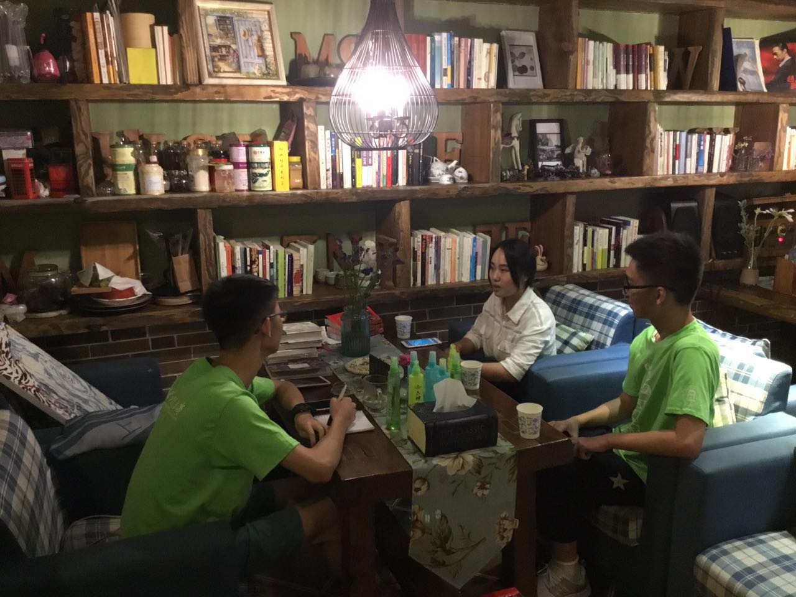
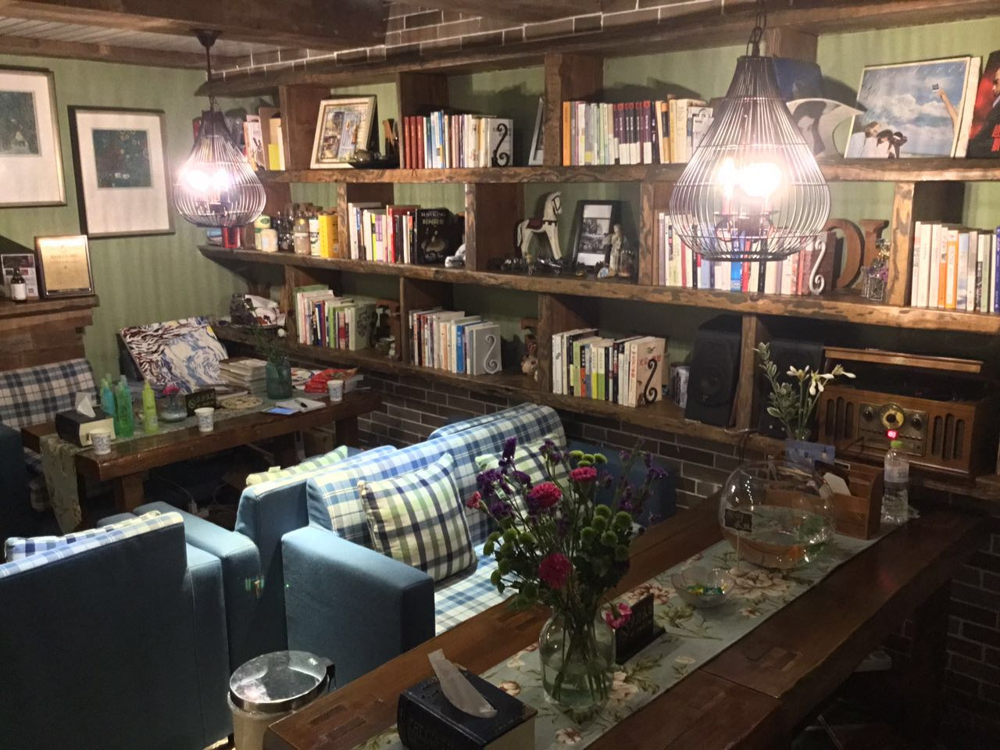

2017年7月25日晚，伴随着火辣辣的阳光和嘈杂的蝉鸣声也渐渐褪去伴，太阳也终于落山。而不同于前几日，今天我们是在傍晚上才来到第四站——“蓝莲花开”民宿。 这家民宿处在街道转角的尽头，民宿旁边的一汪池水里面栽种着几朵莲花，含苞待放：静谧而又充满活力。从地理位置和环境来看，这家民宿好似水草丛中的莲花，虽然只是青芝坞众多民宿中的一员，却又保持着自己出淤泥而不染的清香。而一踏入民宿，我们也被这家店古色古香的装修风格深深地吸引住了。暗红的檀木、暗黄的灯光和舒缓的钢琴曲，这家氛围独特的民宿不禁让人联想到了欧洲中世纪庄严和肃穆的贵族建筑。在将行李匆匆安放之后，我们便在一个闲暇的时间和店主聊起了她的民宿之家。  经过了初步的交谈，我们了解到由于地处偏僻，入住这家民宿的客人基本上都是通过线上的网站来预订的。虽然处在街道角落，民宿内摄像头和门禁都是和公安联网的，这样保障了民宿内客人的人身安全，而且青芝坞二十四小时都有保安在巡逻。不过出乎我们意料的是，不像大部分民宿，是带有住宿功能的升级版农家乐，这家民宿其实是由一家公司来管理。而该公司在杭州青芝坞除了“蓝莲花开”民宿之外，还开有2家风格不同的民宿。不仅仅是杭州，在苏州和上海等地，该公司也有着林林总总的民宿分店，不论从规模还是经营的角度来看，这都是一家走在民宿行业前列的具有现代化理念的公司了。而在每家民宿的开业前期，公司老板总会亲自坐镇，对新店进行管理，而待其业绩稳定下来之后，则全权交由管家负责。这家民宿一楼还有3排的墙壁书架，而书架上玲琅满目的书籍则大部分是来自枫林晚书店，由于这两位老板的亲密朋友关系，民宿公司老板也就“近”取材，这也促进了现代的一种跨界的良性商业合作。  虽然看起来这只是简单地商业合作，但也是人与人之间友好关系和信任的体现，双方都从拿到了自己要想的，这种交易无疑是自愿的，而且是效益最大化的。一种互赢商业合作往往是能持久不衰的，而且其背后还隐藏了些许公共商品的本质，也带富有共享经济的精神。而在一楼的墙壁上，也贴着许多曾住过的旅客的寄语卡片，有小孩子开心而又扭捏的字体，也有大人们对于民宿细致服务的赞美之词。这家民宿无可挑剔的服务态度和管理模式也无愧被携程网评为年度最“浪漫”民俗。